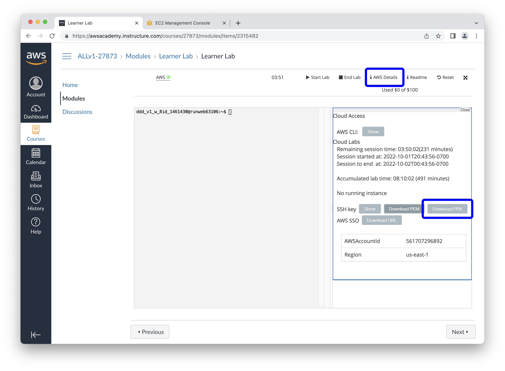
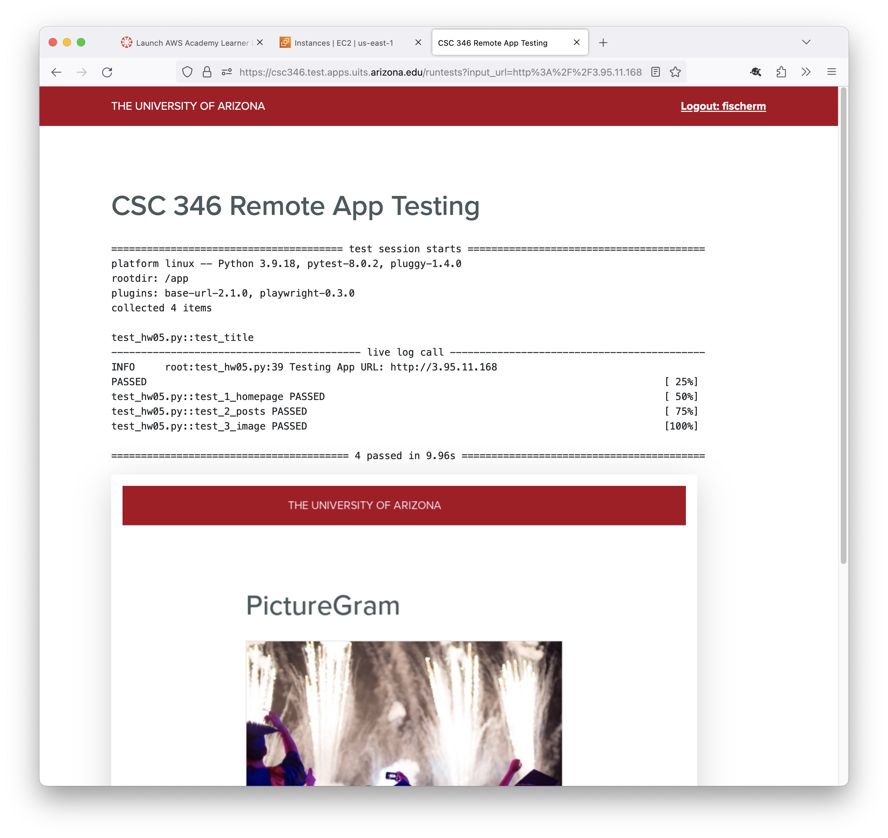

CSC 346 - Homework 5 #
In this homework assignment we'll begin working with Amazon Web Services. You will create an EC2 instance (AWS's Virtual Machine), and run a docker container on it containing the beginnings of our image sharing client.
What to turn in #
yournetid-hw05/
Dockerfile
html/
index.html
app.html
js/
app.js
Points #
This assignment will be worth 50 points. Turning the assignment in early will earn you an additional 5 points extra credit.
- Early submission: March 1st 11pm MST (UTC-7)
- Final Due Date: March 2nd 11pm MST (UTC-7)
Starting Point #
For this assignment, begin by downloading the following Zip file. This contains the basic diretory structure, and some starting HTML documents. Place these files into your yournetid-hw05 directory, and add to the files as needed.
https://www2.cs.arizona.edu/classes/cs346/spring24/homework/NETID-hw05.zip
Part 0: Set up your AWS Academy Account #
You should already have completed setting up your AWS Academy account. If you haven't done this yet, or are stuck, please contact the TAs as soon as possible. See the AWS Slides for how to set up your AWS Academy account, and VS Code CLI credentials.
Log in to the AWS Academy Console here.
Part 1: Set up EC2 Instance #
The lecture slides for AWS-VMs go through in detail how to set up a basic EC2 instance. You should be able to follow the slides to set up your basic t3.micro EC2 instance, and get docker installed.
Be sure you can remotely connect to your EC2 instance with SSH, either diretly in your Terminal, through PowerShell, or using Putty.
Part 2: Working Remotely #
For the rest of the assignment, you will need to figure out a reliable way to move files back and forth from your laptop to your EC2 instance, or else work on files directly on the EC2 instance.
For all of the following options, make sure your AWS Academy session is active and your EC2 instance is running. You will also need to make sure you have downloaded the SSH Key File from the AWS Academy console, and put it somewhere you can find. You'll need this file to connect to your EC2 instance. Lastly you will need to note the current public IP address of your EC2 instance.
Direct Editing #
If you really love vim or nano or emacs, go crazy! You'll have access to all of these tools on your Amazon Linux instance.
Remote Editing With VS Code #
VS Code has a wonderful Remote SSH plugin that works great with Amazon Linux EC2 instances. This allows you to open a local VS Code window on your laptop which is directly connected to a remote host. Once connected, you can work in VS Code exactly as you would locally, but all the files are edited directly on the remote host, and you also have access to a terminal session on the remote host as well. You can even drag and drop files from your laptop into the VS Code file browser to copy them directly to the host. Right-click on a remote file to download it to your laptop.
This can take some time to set up, but I have found it worth the trouble. See the VS Code Remote SSH slides for a complete walkthrough.
VS Code Remote SSH Walkthrough
Transfer files from your laptop #
Many times it is easier to work on things locally on your laptop, and then move things to the server when you're done. This assignment is probably best done like this. Using the provided Dockerfile, run your container locally and build the required HTML pages and JavaScript code as described in Part 3.
Once you have your container working correctly, you can then move your files to the server.
Mac / Linux CLI: rsync #
If you're on a macOS or Linux laptop, you can use the rsync command line tool to move all the files in a directory to a remote host.
rsync -rlvz -e 'ssh -i ./labsuser.pem' hw05/ ec2-user@<EC2 Public IP>:~/hw05/
You will need to change the ./labsuser.pem part to match your file name, and wherever you have placed your public key file downlaoded from AWS Academy. Substitute the public IP address you noted from the EC2 console ec2-user@<EC2 Public IP> ie ec2-user@18.212.36.7. The colon after the IP address separates the host IP from the path on the host you want to copy files to. ~/hw05/ means to create a hw05 directory inside the home directory of the ec2-user account.
Windows WinSCP #
If you're on Windows, WinSCP is a good choice, and has good documentation. Instead of the .pem version of the private key, you will want to download the .ppk version from the AWS Academy console.

Follow the "Direct Connections" instructions on the WinSCP documentation site for connecting to an EC2 instance. Note that you can use the IP address or the hostname from the EC2 console. Be sure to select your .ppk file in the Advanced Site Settings > SSH > Authentication window.
Part 3: Image Sharing Client #
For the actual content of the website for this assignment, you can start with the NETID-hw05.zip file contents. You won't have to edit index.html or app.html files at all for this assignment. They will be set up for you, but it's still a good idea to take a look at them and see what's in them.
Hint: Experiment with the chat API call in Postman first, to get a feel for the structure of the data that is returned.
GET https://csc346picturegram.test.apps.uits.arizona.edu/chat
app.js #
You'll be doing all your work for this assignment in the app.js file. You will need to load new chat messages from the Class Chat API and display them on a web page. The starter javascript file has extensive comments to guide you through implimenting this.
Part 4: Run Your App on Your EC2 Instance #
After you have your application working locally, we want to run it on the EC2 host you created.
Install Docker #
If you haven't installed Docker on your EC2 instance, do that by running the following command:
sudo yum install docker
You'll need to use the sudo command before many of the installation and docker commands, since the ec2-user used to log into the EC2 host cannot run these commands directly.
After Docker finishes installing, run the service now, and configure it to startup whenever your EC2 instance boots up.
sudo systemctl start docker
sudo systemctl enable docker
You should be able to run basic docker commands now using sudo, such as sudo docker ps -a:
[ec2-user@ip-172-31-21-172 ~]$ sudo docker ps -a
CONTAINER ID IMAGE COMMAND CREATED STATUS PORTS NAMES
Build Image and Run Container #
Once you have Docker installed and configured, transfer your Dockerfile and html files to your EC2 instance. Navigate your CLI console to the folder containing the Dockerfile and html folder, and build the image. Don't forget to use sudo.
sudo docker build -t hw05:latest .
After the image is built, you should be able to run it. Note that since we're running this container on a "real" server host, we can use port 80 on the host to map to port 80 in the container.
sudo docker run -it --rm -p 80:80 hw05:latest
Assuming everything worked, you should be able to visit your EC2 instance by going directly to its public IP address:
http://3.95.11.168/index.html
To find your EC2 instance public IP address, visit the AWS EC2 Console, select the instance, and find the "Public IPv4 address".

Part 5: Automated Tests #
With your application running on a publicly available IP address. Anyone can access your app from the public internet. This means we can also have automated tests run to see how you did.
I have developed a testing app you can use to test out your homework assignment once you get it running on your EC2 instance. You will need to perform a test wtih this app before the due date to receive credit for the EC2 portion of this assignment. All the tests you run through the app are logged, and we will look at the most recent test results for your NetID when we do the grading. So make sure your last test is the good one. :)
https://csc346.test.apps.uits.arizona.edu/
You will need to log in through WebAuth to see the URL form.
The tests take between 10 and 60 seconds to run, so be patient.

You can only test a publicly accessible URL. This cannot be used to test your http://localhost:8080/ version. Think about why this would be.
The automated tests do not test all of the things we will be looking at for this assignment. Passing all of these tests is a really good sign that you're on the right track. We will also be looking at your app.js file for completeness.
Troubleshooting Tips #
- Can you visit your app's URL directly in a browser window? If you cannot load your app, the testing app won't be able to either.
- Check the URL. Did you enter a complete URL such as
http://53.2.35.19? - Does your URL use
http://? We have not configured TLS support, and port 443 is not open on your security group. Make sure to usehttp. - Did you map your docker port 80 to your host's port 80?
-p80:80. Only port 80 is open on our security group to allow incomming connections.